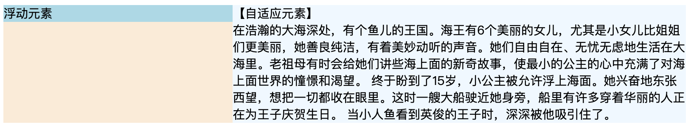

一、流体布局
1.通俗解释
流体布局，通俗解释就是：在正常情况下（非浮动、绝对定位）,水平方向会自动填满容器宽度。当设置margin-left/right、padding-left/right、border-left/right-width时，实际的内容区域（content）就像装在容器中的水一样，会相应变窄（当属性值为负数时会变宽），以自动填满剩余空间。
2.流体布局与自适应两栏布局
使用破坏属性，如浮动\绝对定位。
2.1浮动
1 | <style> |
2.2绝对定位
1 | <style> |
2.3效果

3.问题
- 需提前知道浮动元素或绝对定位元素的尺寸，然后流体内容容器才能设置对应的margin/padding/border值进行位置修正；
- 不同场景的留白距离是不一样的，所以无法使用一个公用的类名（类似.clearfix）。
二、BFC
1.BFC原则
BFC（块级格式化上下文），只需知道触发容器的BFC后，这个容器就是一个完全密闭的盒子，无论盒子里发生什么（即使是原子弹爆炸），都不会影响到外面。所以可以避免margin穿透，内部清除浮动等。
触发BFC有四种方式：
- position: 除static和relative
- display: table-cell / inline-block / table-caption
- float: 不为none
- overflow: auto / scroll / hidden
BFC特性有很多，但这里我们只讨论和float做兄弟时的表现。
若是前面讲到的流体布局div，和float做兄弟时，是覆盖的关系（如文字环绕效果）。而触发div BFC之后，就变成密闭的盒子，不会和浮动元素重叠，此时不会和浮动元素有任何交集，会顺着浮动元素的边缘形成自己的上下文，是块级相邻的效果。
但其流体特性并没有改变，也就是说它自动退避浮动元素宽度的距离，且在布局的水平方向上上会自动去填满除浮动元素内容以外的剩余空间。(理论上，我们需要，但不同的触发方式会有不同的表现，稍后讨论)
前面提到，使用流体布局设置自适应两栏布局时需要提前知道浮动或绝对定位元素的尺寸，且不能使用公用的类名来设置样式。
而利用BFC，就能有效避免这些问题。
1 | <style> |
2.BFC和自适应两栏布局 模块间的间距设置
如果不设置边距，那两个模块就会挨在一起，很丑。所以要设置一个间距。
如果给BFC模块设置margin-left，就会出现同流体布局一样的问题（需要提前知道浮动元素的宽度，不够通用）。
这时应给浮动元素设置margin-right或padding，或者给BFC元素设置padding。
3.与纯流体布局相比的优势
BFC自适应布局的优势：
- 自适应内容由于封闭，更健壮，容错性强。比方说，内部clear:both不会与兄弟float产生矛盾。而流体布局，clear:both会让后面内容无法和float元素在一个水平上，产生布局问题。
- 自适应内容自动填满浮动以外的区域，而无需关心浮动元素的宽度，可以整站大规模应用。而流体布局，需要大小不确定的margin/padding/border等值撑开合适间距，无法CSS组件化。
4.BFC家族与自适应布局
理论上，任何BFC元素和浮动搞基的时候，都可以实现自动填充（流体特性）的自适应布局。但是，由于大多数触发BFC的CSS属性自身会有一些其他特性，所以，实际操作时，能兼顾流体特性和BFC特性来实现无敌自适应布局的属性并不多。
4.1 float: left/right
设置浮动会触发元素本身BFC，但浮动属性属于破坏属性，会破坏块级元素本身的流体自适应性且具有包裹性，所以不能用来实现自动填满容器的自适应布局。但是兼容性好。（实际上，float:left/right就是一个多加了方向的display:inline-box;）
4.2 position: absolute
严重脱离文档流。
4.3 overflow: hidden
溢出剪裁，但不影响块级元素本身的属性，保留了元素自身的流体自适应特性。但是因为很多场景是不能使用的，所以无法整站CSS组件化，只能在局部（确定不会出现溢出剪裁的情况下）使用。
（overflow:hidden配合height一起时，才会被剪裁）
4.4 display: inline-block
这个属性会让元素尺寸包裹收缩（会跟随内部元素的宽度显示），不能水平宽度自适应。
但是在IE6/IE7中，对块级元素设置该属性仍会保留流体自适应特性。
4.5 display: table-cell
让元素表现得像单元格一样，IE8+。它同display: inline-block一样会包裹收缩。但是，单元格有个神奇的特性：无论你宽度值设置的多大，实际宽度也不会超过父容器的宽度。
所以这里我们可以把display: table-cell这个BFC元素宽度设置的非常大，如3000px。若父元素100%，那其实就跟块级元素的水平自适应效果一样了。
1 | .float-left { |
但有两点制约：
- 只适用于IE8+
- 应付连续英文字符换行有些吃力（可以嵌套table-layout:fixed解决）。但是，总体来看，适用的场景要比overflow: hidden更广。
4.6 display: table-row
不能感应width，不能自适应剩余容器空间。
4.7 display：table-caption
一无是处……
总结：对BFC家族大致过了一遍后，能担任自适应布局重任的：
overflow: auto/hiddenIE7+display: inline-blockIE6/IE7display: table-cellIE8+
但是由于overflow会出现溢出剪裁和滚动条等隐患，不适合作为整站通用类，所以，最适用与两栏/多栏自适应布局的通用类语句是（block水平元素，需配合浮动）
1 | .cell { |
因为和浮动元素合作，所以需要清除浮动。
参考：《CSS深入理解流体特性和BFC特性下多栏自适应布局》